Analysis of Rewarding in DA Network
Owner: Alexander Mozeika Reviewers: Marcin Pawlowski, Marvin Jones, Mehmet, Alvaro Castro-Castilla
Introduction
This document examines the conditions required for fair and reliable distribution of rewards in a decentralised data availability (DA) network, where nodes independently sample peers to judge their performance. Our focus is on three core properties:
- Ensuring coverage. We show that even when each node samples only a small number of peers per round, across rounds, the probability that every node gets observed is very high when .
- Stability of peer sampling. By treating the collection of all peer samples as a random graph, we demonstrate that each node's number of observations remains tightly clustered around the average. This ensures the mechanism stays predictable and robust.
- Robust opinion aggregation. We consider a simple majority-vote rule for combining all (binary) reports of nodes into a single consensus judgment and prove that this rule tolerates the maximum number of inconsistent or malicious reports without breaking. Throughout, we support our theoretical claims with simulations and numerical experiments, showing that the proposed sampling rates, observation windows, and voting thresholds create an efficient, scalable reward system that is both reliable and resilient against failures or adversarial behaviour.
Key Findings
- Small sampling rates achieve network coverage exponentially fast when the block count exceeds some fraction of the network size as can be seen in the figure below:
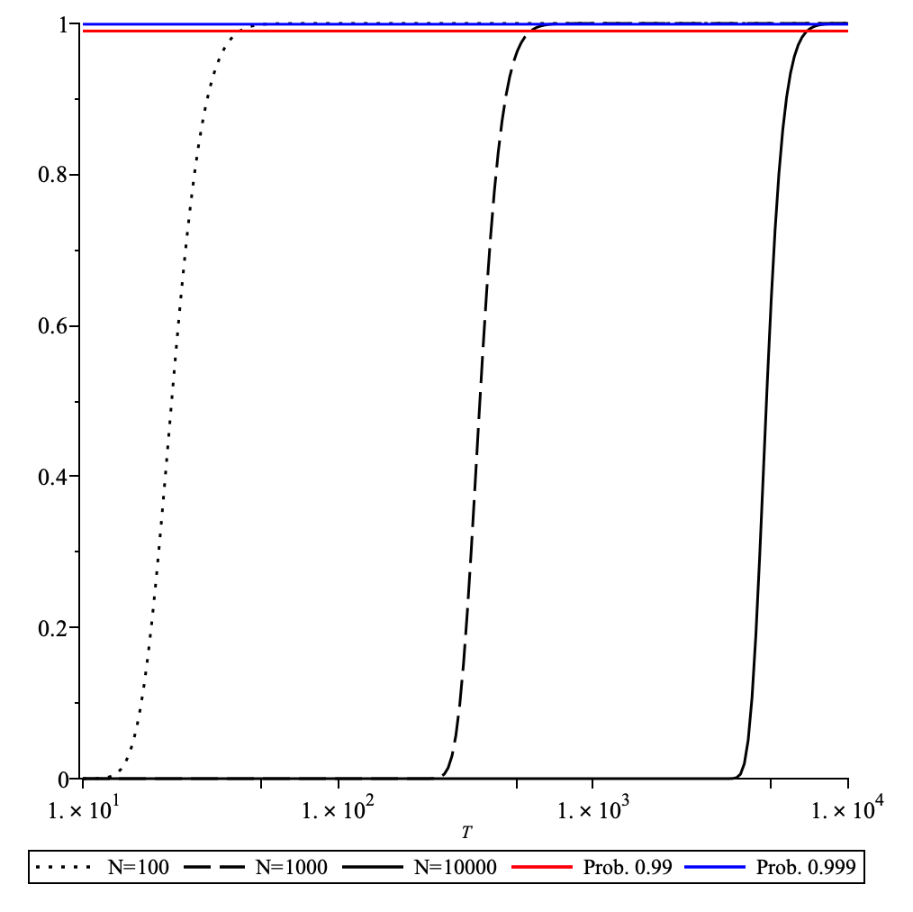
The probability to achieve full coverage plotted as function of the number of blocks for the network size . Here it assumed that a node samples nodes per block.
- The number of blocks needed to achieve full coverage (with high prob. ) is less than the network size as can be seen in the figure below:
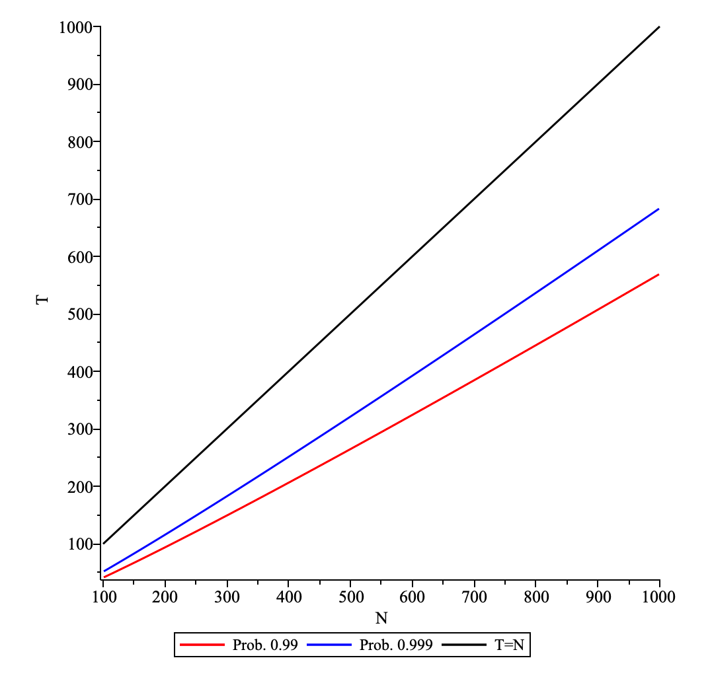
The number of blocks , which is needed to achieve full coverage (with prob. and ), is plotted as function of the network size . Here it assumed that a node samples nodes per block.
- Node connectivity follows a predictable binomial distribution.
- The threshold maximises disagreement tolerance while recovering true opinions.
- The system tolerates up to disagreements in odd-sized networks and disagreements in even-sized networks. This analysis provides theoretical foundations for a robust decentralised reward system resistant to failures and adversarial behaviour.
Overview
This document examines conditions for fair and reliable reward distribution in a decentralized data availability network with independent peer sampling. We present a comprehensive mathematical model and theoretical framework supporting the reward distribution system. The framework consists of:
- Assumptions: Exploration of network structure, participant interaction patterns, and underlying sampling mechanisms.
- Efficiency of Sampling: Probability analysis backed by simulations and statistical validation.
- Analysis of DA Sampling: Protocol specifications, implementation considerations, and network connectivity assessment.
- Fault Tolerant Properties: System resilience against failure modes and mathematical approach to threshold optimization.
Analysis
Assumptions
We consider nodes participating in the data availability (DA) network. Each node provides his opinion about all nodes. This opinion is about the performance of a node and is modelled by a binary variable (don’t know/good performance). Node submits a vector of opinions , where is the opinion of a node about the node . Each node samples nodes per block in DA, so a node could have opinions per block. DA works in sessions and the length of the latter is measured in the number of blocks .
Efficiency of Sampling
The set of nodes sampled by node in one session of DA is , where is the set of nodes sampled randomly (without replacement) by node from the set of all nodes for block . We note that with . The probability that an element of is not in any of the subsets is . From the latter follows that the probability that an element of is in at least one subset is given by . Hence the probability that , i.e. a node sampled all elements of , is given by
Note that while measures “observability” of a specific node, the expression ensures that all nodes are observed at least once. To achieve, e.g. , probability of full observability, it suffices to sample nodes per block for the number of blocks dependent on . Furthermore, the prob. since . The latter is given by
Hence for the prob. . The latter happens exponentially fast with as can be seen in the plot below:
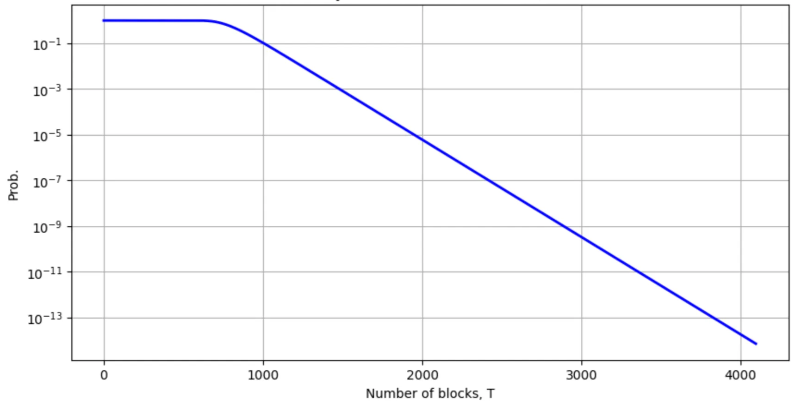
The probability as a function of the number of blocks plotted for and .
The speed of approach to in above is controlled by and for larger the same probability can be attained with a smaller number of blocks. The probability matches simulations to a high degree of accuracy as can be seen in the figure below:
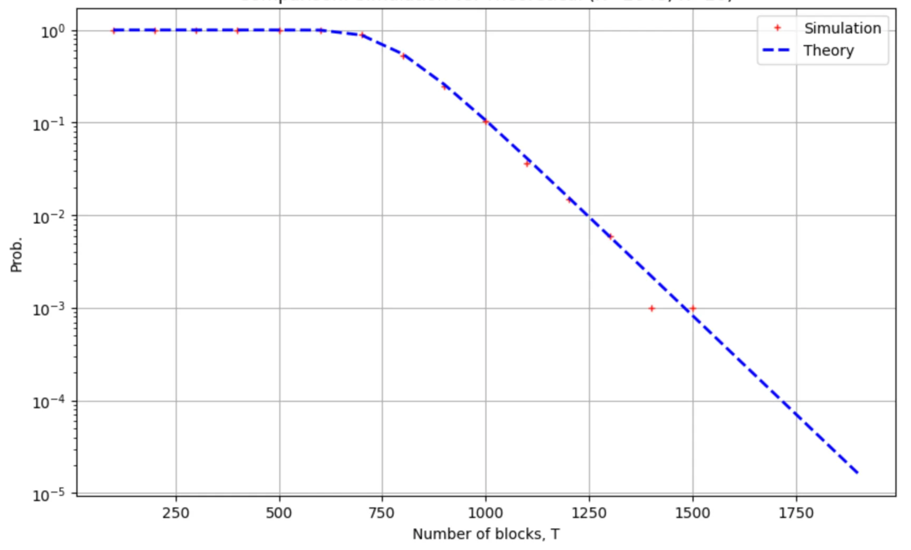
Comparing the empirical version of the probability , obtained from samples of simulation, with the analytic expression. The probability is plotted as a function of the number of blocks for and .
Furthermore, the probability is a monotonically increasing function of , as can be seen in the figure below:
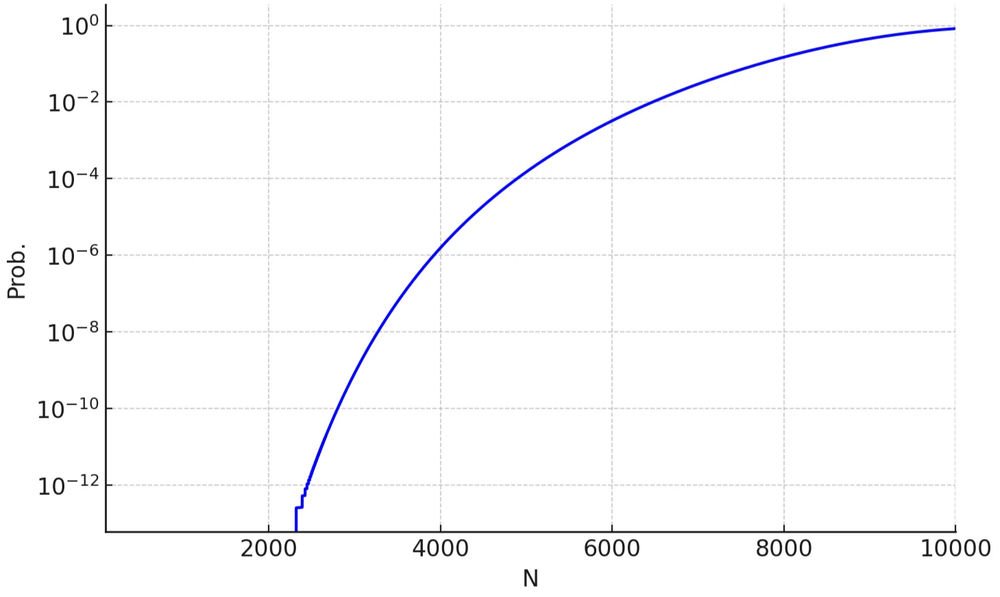
The probability as plotted a function of the number of nodes for blocks and . For the prob. is (approx.) and for the prob. is (approx.) .
Analysis of DA Sampling
Details of DA Sampling
The set of nodes participating in the DA network is divided (almost) equally into subnetworks. In each subnetwork there is at least one node from . Each node in first samples randomly (without replacement) subnetworks from the subnetworks. Then, in each of the sampled subnetworks, a single node is sampled. If , then the above is equivalent to random sampling (without replacement) of nodes from .
Analysis of Connectivity
We consider the case of . We assume that each node samples randomly nodes from exactly times, where . The result of sampling is that we have subsets of nodes (-subsets). We would like to know in how many subsets of nodes node is a member, i.e. how many times node was sampled by other nodes. We note that the result of sampling can be represented as a random factor-graph:
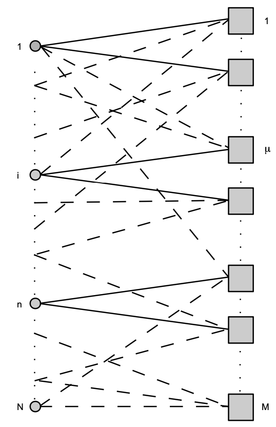
The random factor-graph generated by sampling of subsets of nodes (-subsets), represented by factors (squares), from the set of all nodes represented by (filled) circles. If node is member of a subset then this is represented by an edge on this graph; for .
The connectivity of a node in this factor graph counts the number of -subsets in which this node is a member. The connectivity of a node is a random variable from the binomial distribution with the parameters and . Thus using , the average connectivity of a node is . We note that the typical, i.e. most probable, connectivity is also approx. . The probability that connectivity of node is is given by , i.e the probability is small when the average connectivity is large. We note that for the prob. is bounded above by . For the probability that node connectivity is less than average, , is bounded from above by . The latter follows from
where the first line in above is the binomial (Chernoff) tail bound and the second line is obtained by application of Pinsker’s inequality. The latter is also upper bound on the prob. of the event . Let for some . From the above, the probability of has an upper bound of . We note that for we have that if in this limit, but for we have the upper bound independent on the number of nodes . For , we have:
For the probability that or for , i.e. 10% deviation from the average, is bounded from above by ( for ) and for , i.e. 20% deviation from the average, the upper bound is ( for ). A much tighter upper bound is given by
where and . In a similar manner, we have
where . From the above, it follows that
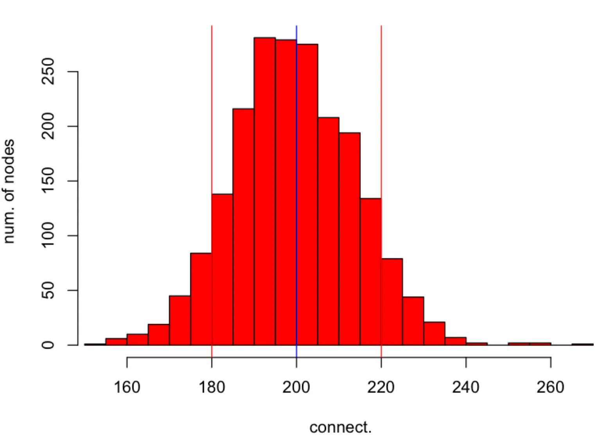
The histogram of connectivities of nodes in obtained in simulation (red colour). Each node in is sampling subsets of nodes from . The average connectivity is represented by the (blue) vertical line in the middle and deviations from the average are represented by two (red) vertical lines. The parameters of simulation are , , and . The probability that the connectivity is outside the interval is at most follows from the upper bound.
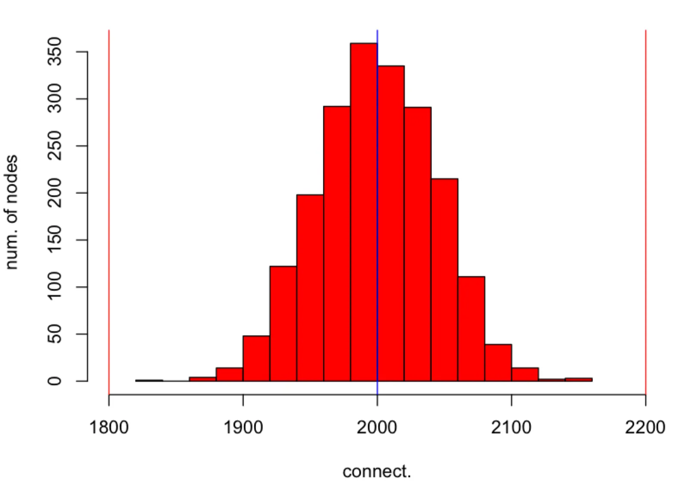
The histogram of connectivities of nodes in obtained in simulation (red colour). Each node in is sampling subsets of nodes from . The average connectivity is represented by the (blue) vertical line in the middle and deviations from the average are represented by two (red) vertical lines. The parameters of simulation are , , and . The probability that the connectivity is outside the interval is at most follows from the upper bound.
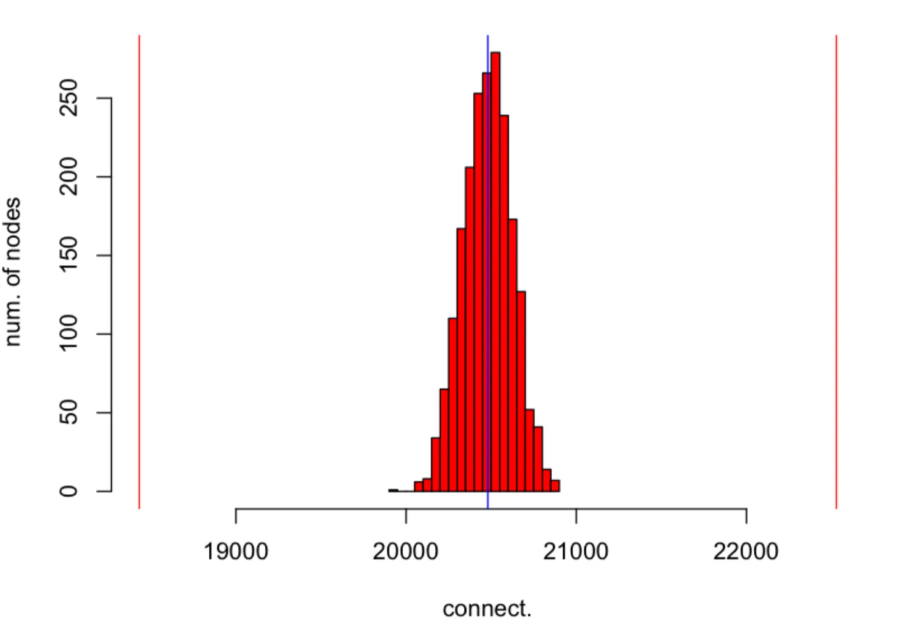
The histogram of connectivities of nodes in obtained in simulation (red colour). Each node in is sampling subsets of nodes from . The average connectivity is represented by the (blue) vertical line in the middle and deviations from the average are represented by two (red) vertical lines. The parameters of simulation are , , and . The probability that the connectivity is outside the interval is at most follows from the upper bound.
Fault Tolerant Properties of Rewarding and Optimal Threshold
The true opinion is the opinion about node based on some objective criteria independent from other nodes. We assume that there exists a vector of “true” opinions , where , about all nodes in . Node submits the vector of opinions about other nodes in DA. Here is the opinion of node about the node . The sum is the sum of opinions about node . Performance of node is considered to be “good” if , where is some threshold, e.g. . We assume that , where . Here for we use for . We note that for we have and for we have , i.e. the opinion of a node about the node is either the true opinion or the opposite of true opinion . We note that gives rise to the following “opinion” matrix
where the -th row is the vector of opinions submitted by node about all nodes and the -th column is the vector of opinions of all N nodes about the node . Let us consider the sum of opinions about the node as follows
In the above expression, if , then the first term evaluates to zero; and if , then the second term evaluates to zero. Thus, only the correct specific to term remains active in each scenario. Hence from above follows that
where is the number of nodes disagreeing with the true opinion . We note that
where is the indicator function, is the opinion about the node computed from the “opinion” matrix . If for all then all true and inferred opinions are in agreement, i.e. true opinions are recovered from opinion vectors submitted by nodes. Let us assume that and . For to agree with and for to agree with the following two inequalities
have to be satisfied. Let us assume that the threshold then this gives us and . If is even then the upper bound on and are, respectively, and . The minimum from the latter two, i.e. , satisfies both inequalities. Hence is the maximum number of disagreements which allow us to recover the true opinions and from the computed opinions and . For and odd, a similar argument gives us for the maximum number of disagreements under which the true opinions and can be recovered. We note that for any vector of true opinions the condition to recover these true opinions from the opinion matrix is given by the system of inequalities
where and . For the above system is satisfied by
which is the maximum number of disagreements under which the true opinions vector can be recovered exactly. We note that above is true for any distribution of .
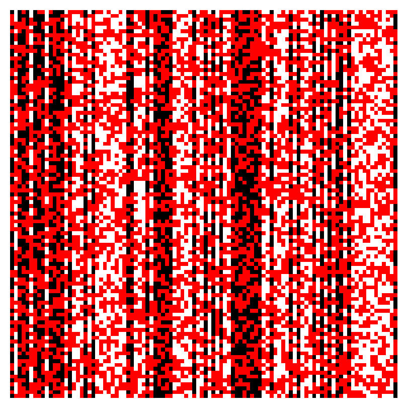
Image representation of the opinion matrix for . The vector of true opinions is represented by the black and white pixels corresponding, respectively, to s and s. The red pixels indicate disagreements with true opinions in the opinion (row) vectors submitted by nodes. Here less than of pixels in column vectors, used to compute opinions about nodes, are red and hence true opinion about each node can be recovered exactly.
The threshold is optimal as it allows the maximum number of disagreements with the true opinion about a node but still allows to recover the true opinion about each node exactly.
Proof that the Threshold is Optimal
- It is sufficient to consider only two inequalities from the system. In particular we consider
- We want to find such that is maximised.**The latter is given by the solution of (see figure below) which is .
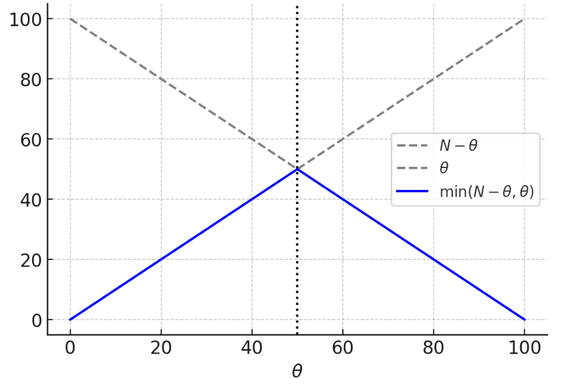
and plotted as a function of for .
- If is even, then
to satisfy the system of inequalities and hence is the maximum which saturates above.
- If is odd, then
then is the maximum.
Conclusion
This document provides a comprehensive theoretical and empirical evaluation of the reward distribution mechanism in the DA network based on independent peer sampling. Through probabilistic modelling and simulations, we demonstrate that:
- High coverage of peer observations is achieved exponentially fast with respect to the number of blocks, even with modest per-block sampling rates.
- Connectivity across the network remains tightly concentrated around the average number of observations per node, enabling predictable and equitable participation.
- A majority voting rule with a threshold of is proven to be optimal, allowing the maximum possible number of disagreements while still correctly recovering the true underlying performance vector. These findings validate the soundness and scalability of the DA Network rewarding protocol. The analysis guarantees both robustness to adversarial behavior and fairness across the participant set, laying a strong foundation for deploying this mechanism in a decentralized setting. Future work may consider adaptive sampling strategies or reputation-weighted voting to further enhance the system’s resilience under dynamic network conditions.
Appendix
Statistical Properties of Node Connectivities
Let us define the random (”connectivity”) variable , where and , which is with prob. when node is in the -subset and with prob. otherwise. Given that variables are sampled randomly, but subject to the constraint for all , the joint prob. distribution of all ’s, i.e. the set , is given by
where is the normalisation constant. We are interested in the random variable , i.e. the “connectivity” of node . In particular we consider the distribution . We note that, without loss of generality, we have and for some the moment generating function (MGF) of the latter is given by and hence , i.e. is the binomial distribution with parameters and .
Bibliography
Ferrante, Guido Carlo. "Bounds on binomial tails with applications." IEEE Transactions on Information Theory 67, no. 12 (2021): 8273-8279.